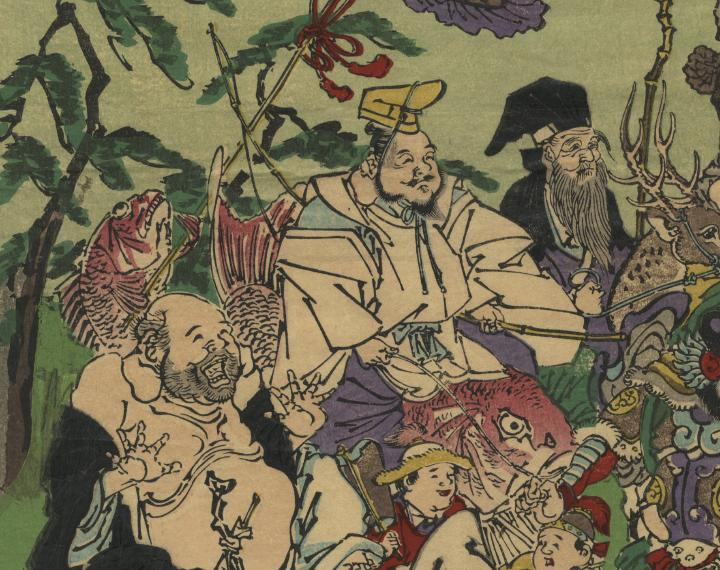

← 图鉴索引

恵比寿が鯛に乗り、釣り竿を持っている。
著作者：猩々暁斎／出典：親書誌：U426_nichibunken_0407：七福冨士之萬㐂神；シチフク フジ ノ バンキシン／日付：2015／資源識別子：U426_nichibunken_0407_0001_0005
Copyright (c)2010- International Research Center for Japanese Studies, Kyoto, Japan. All rights reserved.